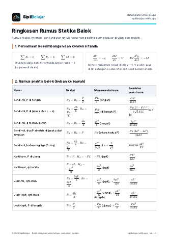

Materi unduhan
Ringkasan rumus, tabel, dan contoh soal yang disusun SipilBelajar. Gratis untuk belajar, boleh dicetak dan dibagikan dengan mencantumkan sumber.
Mencari peraturan (SNI)?
Dokumen SNI dilindungi hak cipta dan hanya resmi bila diambil dari penerbitnya. Daftar standar yang sering dipakai beserta tautan ke sumber resminya ada di halaman Peraturan.